Macanudo Inspirado Orange Robusto
Dos Hermanos Maduro Robusto
Dos Hermanos Corona
Sultan Vintage Robusto
Cohiba Siglo II
Taru Martani Robusto
Montecristo No.4
Romeo y Julieta Romeo No.1
AVO Heritage Robusto
Montecristo Crafted by AJ Fernandez Toro
다비도프 야마사 페팃 처칠
아투로 푸엔테 로얄 살루트 마두로
다비도프 프리메로스 마두로 니카라과
올리바 코네티컷 리저브 로부스토
올리바 세리에 G 스페셜 G
플라센시아 알마 델 시엘로
다이아몬드 크라운 마두로 No.5
다비도프 시그니처 No.2
올리바 세리에 G 토로
로키파텔 빈티지 1990 주니어
파드론 2000 내추럴
다비도프Davidoff
시그니처 No.2
프리메로스 마두로 니카라과
야마사 페팃 처칠
파드론Padrón
파드론 2000 내추럴
로키파텔Rocky Patel
빈티지 1990 주니어
올리바Oliva
세리에 G 토로
세리에 G 스페셜 G
코네티컷 리저브 로부스토
다이아몬드 크라운Diamond Crown
마두로 No.5
플라센시아Plasencia
알마 델 시엘로
아투로 푸엔테Arturo Fuente
샤토 푸엔테 로얄 살루트 마두로
몬테크리스토Montecristo
Crafted by AJ Fernandez Toro
아보AVO
Heritage Robusto
타루 마르타니Taru Martani · Indonesia
Robusto Special Edition
마카누도Macanudo
Inspirado Orange Robusto
도스 에르마노스Dos Hermanos · Indonesia (Djarum)
Maduro Robusto
Corona
술탄Sultan · Indonesia
Vintage Robusto
코이바Cohiba
Siglo II
몬테크리스토 (하바나)Montecristo Habana
No.4
로메오 이 훌리에타Romeo y Julieta
Romeo No.1 (튜보)
Macanudo Inspirado Orange Robusto
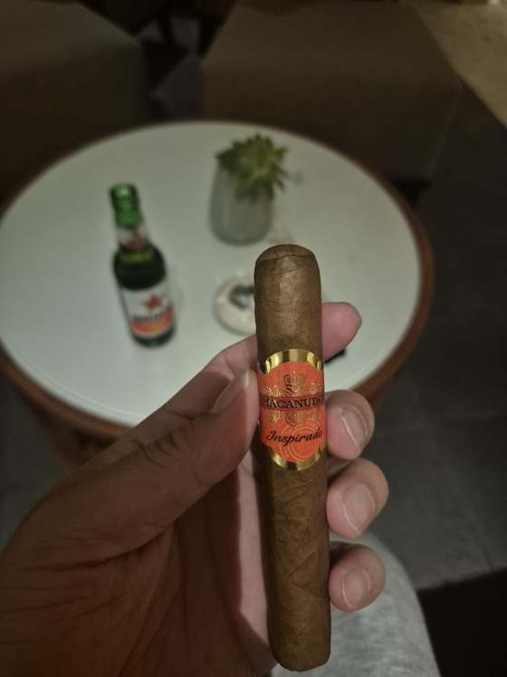
- 래퍼
- 온두라스 올란초 산아구스틴 로사도 (셰이드그로운)
- 바인더
- 온두라스 하마스트란
- 필러
- 도미니카 필로토 쿠바노 · 온두라스 하마스트란 · 니카라과 오메테페
- 시더 초반, 몬테 AJ보단 옅음
- 후추 초반 약하게, 1/3 지나 빠짐
- 크림 중반, 처음으로 맛(달큰함)으로 잡음
- 견과 중반, 크림 뒤에 이어짐
- 가죽 후반 마르고 무겁게 남는 것 — 후보
- 캐러멜
- 흙 쿰쿰함 없었음
발리 마지막 밤, 누사두아. Bali Collection의 그리스 식당 OIA에서 저녁을 먹고 옆 시가 카운터에서 오렌지 5개비, CAO 필론 5개비를 샀다. 호텔로 돌아와 빈땅 한 병과 함께 오렌지부터.
호텔에서 미국 사이트를 열어보니 오렌지 5팩이 $31.95, 개비당 9천 원이 안 됐다. 발리는 190K(1.65만 원)로 두 배. 배송비와 담배세를 넣으면 실제 차이는 1만 원대지만, 싸게 샀다고 생각하고 피우기 시작한 터라 첫인상은 시가와 상관없이 깎인 채로 시작했다.
리뷰대로 시더에 약한 후추로 열었다. 50게이지라 연기가 넉넉하고 열이 덜 올라서 첫 1/3부터 레트로헤일이 편했다. 시더는 몬테 AJ 기준으로 보면 옅은 편 — 이 시가에서 시더는 주인공이 아니라 배경이었다.
1/3을 지나며 후추가 빠지고 그 자리에 크림이 들어왔다. 지금까지 크림은 연기 질감으로만 잡았는데, 이번엔 우유 같은 달큰함이 맛으로 잡혔다. 그 위로 견과가 올라왔다 — 시글로 II 때 잡은 "아몬드 먹고 코 뒤에 남는 고소함". 시더 → 크림 → 견과로 이어지는 중반이 이 시가의 전부였고, 첫인상이 여기서 뒤집혔다. 강도는 미디엄이라 "좀만 더 셌으면"이 계속 따라붙었다.
마지막 1/3에서 크림·견과가 빠지고 정체 모를 묵직한 것이 남았다. 흙처럼 쿰쿰하고 습한 게 아니라 마른 결로 입에 무겁게 남아서, 아직 잡아본 적 없는 가죽의 후보로 두기로 했다. 확정은 파드론·올리바 V처럼 가죽이 진한 시가에서.
Dos Hermanos Maduro Robusto
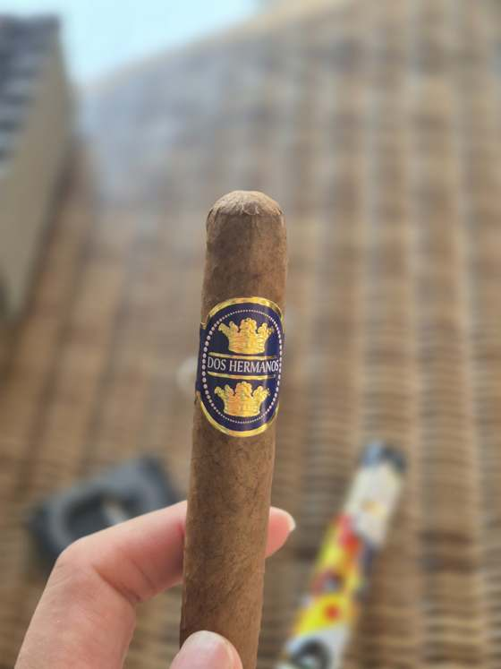
- 래퍼
- 마두로 표기 — 실제 색은 콜로라도 (품종 미확인)
- 바인더
- 미확인
- 필러
- 인도네시아(델리·브수키)·브라질 블렌드
- 후추 초반 셈, 이후 바닥에 끝까지
- 건초 처음부터
- 크림 중반 피크, 후반 옅게
- 견과 중반~후반
- 단맛
- 시더
- 흙
- 코코아 마두로다운 건 없음
발리 일곱째 날 아침, 누사두아 웨스틴 테라스. 전날 코로나에 이어 Dos Hermanos 두 번째, 노란 캐릭터 튜보의 마두로 로부스토. 아이스 아메리카노와 함께.
튜보엔 MADURO라고 찍혀 있는데 래퍼는 콜로라도 수준이었다. 인도네시아 쪽 마두로는 니카라과·브로드리프처럼 까맣게 띄우는 게 아니라 같은 라인에서 한 단계 짙은 잎을 고른 정도라, 색도 맛도 마두로 문법이 아니었다. 처음 손에 든 느낌은 건초였다. "건초향이 좀 많이 나네. 부드럽긴 함."
전날 코로나가 흙으로 열었다면 이건 후추로 열었다. 후추 아래로 견과가 깔리고, 커피 덕인지 너티가 살살 올라왔다. 다만 후추가 1/3 넘어서도 바닥에서 안 빠졌다.
1/3을 지나며 후추가 가라앉고 건초 위에 크림이 올라왔다. 크림·너티·건초가 섞인 중반이 이 시가의 전부였다. 발효 더 된 잎의 부드러움이 나오는 구간이었지만, 약한 후추가 끝까지 바닥에 깔려 있어서 온전히 즐기진 못했다.
후반에 크림이 빠지고 너티만 옅게 남았다. 다만 완전히 꺼진 건 아니고 크림·너트가 약하게나마 이어졌다. 코로나가 리듬 맞추면 견과+단맛까지 갔던 것에 비하면 후반이 얕다.
Dos Hermanos Corona
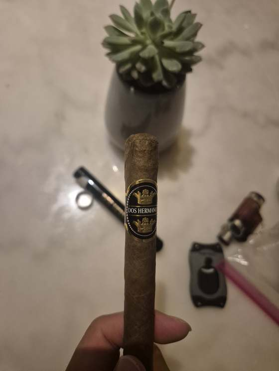
- 래퍼
- 인도네시아 북수마트라 델리
- 바인더
- 미확인
- 필러
- 인도네시아·브라질 블렌드
- 흙 첫 퍼프부터
- 후추 약하게, 몬테 AJ보다 조금 위
- 견과 중반
- 단맛 후반, 리듬 맞췄을 때
- 시더
- 건초
- 크림
발리 여섯째 날 밤, 누사두아 웨스틴으로 옮긴 첫날. Bali Collection 안 Dos Hermanos 스토어에서 코로나·마두로 로부스토 두 개비씩 사 온 것 중 코로나부터. 자룸(PT Djarum)이 만드는 브랜드로, 하르토노 형제 이름에서 따온 '두 형제'. 인도네시아 잎에 브라질 잎을 섞고 랩퍼는 북수마트라 델리 잎을 쓴다. 온라인 정가 80K짜리를 150K에 산 셈. 튜보 안에 시더 슬리브는 없었다. 페어링 없이.
타루·술탄이 소규모 공방이라면 이건 담배 공장의 시가다. 드로우가 처음부터 편했고, 향 이전에 제조 품질에서 한 단계 위였다. 그리고 건초로 시작한 앞의 둘과 달리 첫 퍼프부터 흙. 델리 랩퍼가 자바 잎보다 어둡게 나온다.
흙 위에 후추가 얹혔다. 야마사처럼 눌러앉는 후추가 아니라 몬테 AJ보다 살짝 센 정도. 인도네시아 셋 중 처음으로 뼈대가 있는 시작이었다.
후추가 빠지고 그 자리에 견과가 올라왔다. 흙 위에 견과 — 시글로 II의 구조다. 다만 중반에 타격감이 훅 꺼졌는데, 퍼프 간격을 좁히니 되살아났다. 40 게이지 코로나라 온도가 금방 식고, 그만큼 리듬에 민감하다.
후반 후추 복귀는 블렌드가 아니라 열이었다. 간격을 벌리니 후추가 내려가고 견과가 돌아왔고, 끝에 옅은 단맛 — 브라질 잎이 하는 일이 이거였던 것 같다. 너무 벌리면 죽고 너무 붙이면 매워지는 좁은 구간에서만 견과+단맛이 나온다.
시작은 어제와 같았다 — 흙 쿰쿰에 약한 후추. 래퍼 표면이 파스락해서 건조한가 싶었는데, 연기 질감이 멀쩡해서 델리 잎 특유의 마른 촉감으로 정리. 다만 전개가 어제만큼 올라오지 않았고, 하루 두 대째라는 조건을 감안해도 "그냥 그렇다"에 머물렀다. 첫 개비의 좋은 인상은 타루·술탄 뒤라 상대적으로 좋아 보였던 몫이 있었던 것 같다.
Sultan Vintage Robusto
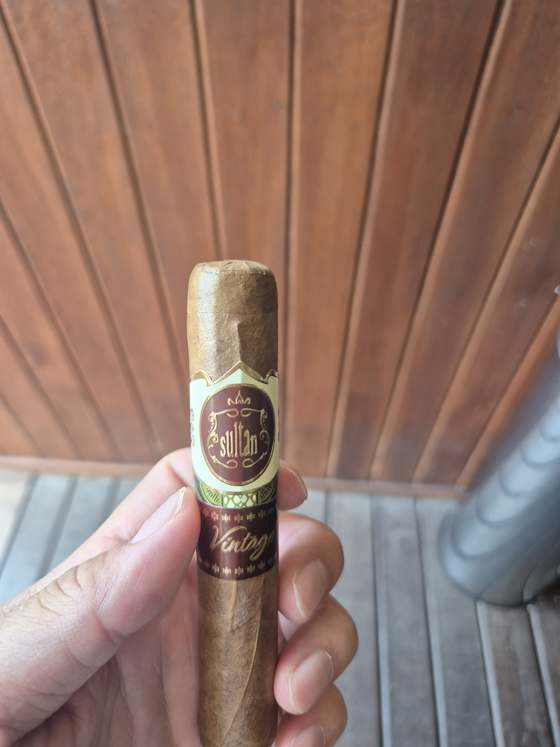
- 래퍼
- 인도네시아 동부 자바
- 바인더
- 인도네시아 동부 자바
- 필러
- 인도네시아 자바 잎 5종 (퓨로)
- 건초 첫 퍼프
- 시더 약하게
- 흙 부드럽게
- 고소 피니시
- 후추 없음
- 단맛
- 크림
발리 넷째 날 점심, Ottimo에서 산 다섯 개비 중 마지막. 자카르타 브랜드 Sultan의 Vintage 라인으로, 판매 페이지 기준 롤링 후 6~12개월 재우고 내놓는다는 인도네시아 프리미엄이다. 어제 Taru Martani(170K)의 두 배 넘는 값. 공식 테이스팅 노트도, 해외 리뷰도 없어서 이번엔 참고할 게 없이 맨몸으로 잡았다. 래퍼는 밝은 클라로에 캡이 도톰했다. 페어링 없이.
Taru Martani와 같은 출발이다. 자바 잎 특유의 건초가 앞에 오고 그 옆에 시더가 얇게 붙었다. 연기는 마일드했고, 처음 든 생각은 코네티컷 계열 — Oliva Connecticut Reserve, Signature No.2 쪽 결이었다.
어제 Taru Martani는 드로우가 막혀 열관리에 실패했는데, 이 개비는 52 게이지에 드로우가 정상이라 처음부터 끝까지 연기가 부드럽게 나왔다. Montecristo AJ 토로 때 "토로라 열관리가 편하다"고 했던 것과 같은 패턴. 길이는 5인치 안쪽이라 부담도 없었다.
건초에서 흙으로 — Taru Martani와 같은 길. 다만 후추가 아예 없어서 풀 레트로헤일이 편했고, 코로 받아도 시더가 아니라 흙이었다. 시더가 코에서 살아나는 Romeo 쪽이 아니라 Siglo II·Montecristo No.4 쪽 흙 축인데, 그 흙이 부드럽게 깔린다는 게 차이.
이 세션의 단어는 "연하다"다. 부드럽다는 질감 얘기고(쿠반도 질감은 부드러웠으니까), 여기서 말한 건 향의 농도 — 같은 흙인데 쿠반은 묵직하게 깔리고 이건 옅게 깔린다. 니코틴 펀치도 약하고 후추도 없고 흙도 옅어서 입문자에겐 편한 시가, 20년 흡연자에겐 뭔가 비는 시가. 중반에 다른 향이 스치긴 했는데 꼽을 만큼 올라오지 않았다. Oliva Connecticut Reserve 때 "마일드한데 향이 약하다"고 했던 그 지점이고, 인도네시아 시가의 한계가 향의 강도라는 게 두 개비째 같은 결론.
피니시에 고소함이 남았다. Taru Martani는 이것조차 없었으니 "타루보단 확실히 낫다"의 정체가 이거다 — Taru Martani 때 "향만 있고 받쳐주는 것이 없다"고 했는데, 이건 받쳐주는 것 중 고소함 하나가 있다. Siglo II와 같은 흙 → 고소함 구조에서 볼륨만 낮춘 버전. 밴드까지 완주.
Cohiba Siglo II
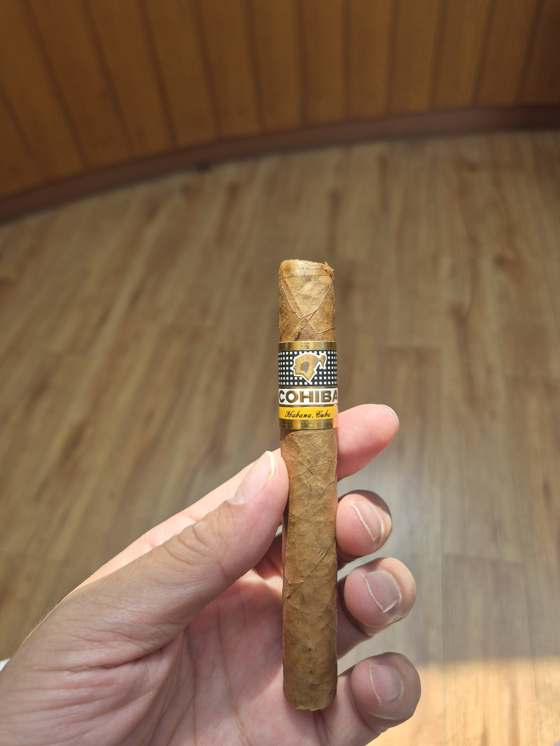
- 래퍼
- 쿠바 부엘타 아바호
- 바인더
- 쿠바
- 필러
- 쿠바 (퓨로, 필러 일부 3차 발효)
- 흙 첫 퍼프
- 건초 초반
- 견과 "아몬드 먹은 뒤 코 뒤"
- 크림 (질감) 두터운 연기
- 단맛·꿀
- 시더
- 커피
- 후추 없음
발리 셋째 날 오후, 이번 여행에서 제일 비싼 개비. 1992년 나온 Siglo 라인 중 두 번째 사이즈로, 몬테 No.4와 같은 Mareva라 크기 변수 없이 정면 비교가 된다. Cohiba는 필러 일부를 통에서 한 번 더 발효(3차 발효)하는 게 브랜드 특징이라 다른 하바노스보다 후추가 둥글다는 평. 래퍼는 로메오보다 한 톤 밝은 클라로에 기름기가 살짝 돌았다. 페어링 없이.
후추 없이 흙이 맨몸으로 온 오프닝. 몬테 No.4는 후추가 앞에서 막고 그 뒤에 흙이 있었는데, 이건 막는 게 없어서 첫 퍼프부터 그 결이 보였다. 리뷰에서 흙은 일부에만 나오는 노트라 개비 초반 습기일 가능성도 두고 봤는데, 연기량이 아주 좋았던 걸 보면 컨디션 탓은 아니고 이 시가의 오프닝이 그냥 이랬던 것으로 정리.
젖은 흙에서 마른 쪽으로 — 야마사 때 정리한 "건초와 흙은 같은 축" 위에서 방향이 바뀐 것. 리뷰의 grassy가 이 구간이다. 다만 시그니처 No.2의 마른 건초를 기준으로 놓으면 그것과는 다르다고 했고, 플라센시아 때 "다비도프랑 비슷한데 좀 더 묵직"이라고 했던 그 위치에 쿠바 잎 무게가 한 겹 더 얹힌 자리.
여기서 한참 걸렸다. 흙과 구운 견과는 둘 다 볶은 계열이라 붙어 다니고, 차이는 단맛·향긋함이 있느냐. "그것보다 가벼운데 쿰쿰"이라고 하기에 견과는 쿰쿰함이 없다고 정리했고, 일단 "옅은 쿰쿰 위에 고소함"으로 두고 갔다. 몬테 No.4의 흙에서 텁텁함을 뺀 것.
이게 오늘의 발견이다. 쿰쿰함이 빠지고 라이트해지자 갈라졌다 — 흙은 입에 무겁게 눌러앉고, 견과는 이렇게 코 뒤에 가볍게 남는다. 리뷰의 "toasted nuts"가 이거고, 견과 노트에 처음으로 본인 좌표가 생겼다: 아몬드 먹은 뒤 코 뒤 여운.
연기가 몬테·로메오보다 두텁고 부드러웠다. 리뷰의 "creamy"가 향이 아니라 이 질감이다 — 다이아몬드 크라운 때 크림을 질감과 향으로 분리했던 것 중 질감 쪽. 타루 마르타니의 드로우 막힘, AVO의 연기 부족과 정반대로 이 개비는 컨디션이 좋았다.
견과·크림 질감이 그대로 유지됐고, 리뷰의 꿀·캐러멜은 끝까지 못 잡았다. 시더도 안 왔다. 억지로 찾지 않고 그대로 기록 — 로메오에선 잡혔고 여기선 안 잡혔다는 것 자체가 비교 정보다. 리뷰 공통 노트 5개(크림·단맛·견과·시더·커피) 중 크림·견과, 그리고 자주 나오는 건초까지 셋 확인.
열일곱 개비 중 처음 나온 말.
Taru Martani Robusto Special Edition
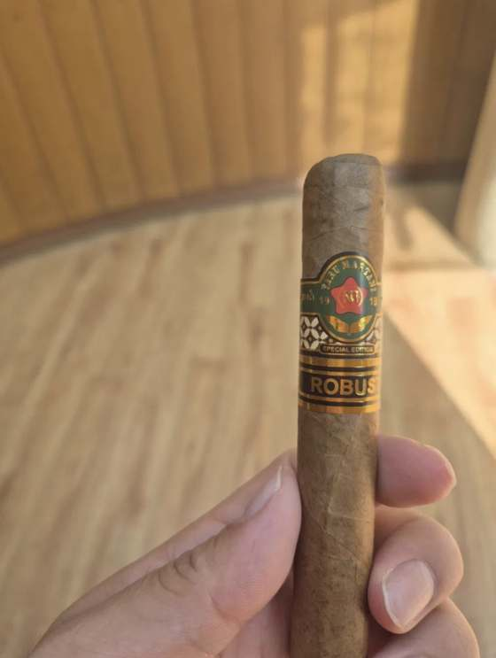
- 래퍼
- 인도네시아 자바
- 바인더
- 인도네시아 자바
- 필러
- 인도네시아 자바 브수키·젬버 (퓨로)
- 시더·나무 초반
- 플로럴 초반
- 흙 중반
- 후추 약하게, 시더를 살림
- 건초
- 고소
- 단맛
로메오·몬테 No.4에 이어 발리 셋째 날, 이번엔 로컬. 타루 마르타니는 1918년 족자카르타에서 시작한 인도네시아 담배회사로, Ottimo 리스트에서 제일 싼 축(쿠반 700K 대비 170K)이라 "발리 산지 시가 한번 경험" 용도로 넣은 개비다. 래퍼는 얇고 밝은 갈색, 결이 성글다. 아침 시가라 페어링 없이.
첫 퍼프부터 몸에 오는 게 없다. 인도네시아 잎이 니코틴·오일이 적어서 쿠반처럼 처음부터 묵직하게 오지 않는다. 대신 향은 있었다 — 약한 나무에 플로럴이 얹힌, 시더에 가까운 밝은 결. 어제 로메오에서 "리뷰의 플로럴 = 시더의 산뜻한 면"으로 잡은 그 기준이 그대로 적용됐다. 리뷰들은 흙·건초를 말했는데 초반엔 그게 없었고, 본인이 잡은 게 맞았다.
이 개비의 문제. 로컬 공장 말림이 빽빽하거나 발리 습도에 잎이 부푼 것. 연기가 라이트한 것도 일부는 이 때문이고, 세게 빨게 되니 열이 올라 열관리가 안 됐다. 다음엔 컷을 한 번 더 깊게 하거나 이쑤시개로 중심을 뚫고 시작할 것.
코네티컷 셰이드도 얇고 밝은 마일드 잎이라 몸통은 같은 급 — 가볍고 부드럽고 니코틴 약함. 코네티컷은 크림·건초로 밋밋하게 가는데 이건 나무+플로럴이 얹혀 있어서 향은 위. 다만 코네티컷 리저브는 개비당 6천원(5개 $23), 이건 13,000원. 미국 10입 직구가와 발리 매장 낱개가라 조건은 다르지만, 향이 좀 낫다고 두 배를 정당화하진 못한다.
리뷰가 말한 흙이 여기서 왔다. 초반은 본인이 맞았고 중반부터는 리뷰가 맞았다. 어제 몬테 No.4와 같은 전개인데 몬테는 후추로 시작해 흙으로 갔고, 이건 밝은 시더로 시작해 흙으로 갔다 — 시작점만 다르고 도착점이 같다. 초반 향긋함은 래퍼가 낸 것이고, 타들어가며 필러가 올라오니 인도네시아 잎의 본색(흙)이 나온 것.
웃긴 게 아니라 어제 정리한 "시더랑 스파이시는 붙어 있다"가 그대로다. 시더의 코 찡한 결이 후추와 같은 축이라, 후추가 살짝 올라오면 그 찡한 게 같이 올라와 흙을 밀어내고 나무가 다시 밝아진다. 취향이 "약한 스파이스+시더"라는 게 여기서 또 확인됐다 — 후추 자체가 아니라 후추가 시더를 살려주는 순간을 좋아하는 것.
향긋한 나무·플로럴, 라이트, 마일드, 니코틴 약함. 밝은 시더 계열이라 취향 축엔 있는데, 로메오와 다른 건 받쳐주는 게 없다는 것 — 로메오는 시더 뒤에 단맛·고소·니코틴이 있었고, 이건 향만 있고 몸통이 빈다. 후반에 고소함이 오는지 보다가 31분에 놓았다.
Montecristo No.4
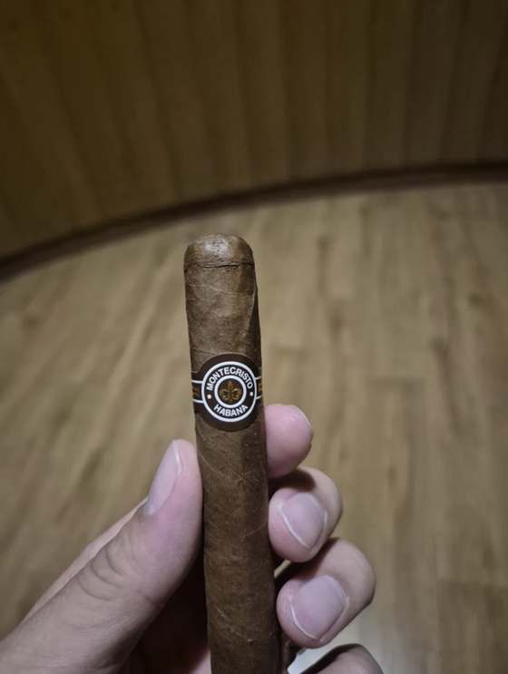
- 래퍼
- 쿠바 부엘타 아바호
- 바인더
- 쿠바
- 필러
- 쿠바 (퓨로)
- 후추 초반, 로메오보다 셈
- 나무 (마른)
- 흙 "쿰쿰"
- 고소·묵직 후반
- 커피 (에스프레소) 후반 고소 묵직이 그건가
- 코코아
- 시더 향긋함 없음
- 가죽
- 크림
어제 로메오 No.1에 이어 발리 둘째 쿠반. 로메오와 같은 5⅛×42 사이즈라 크기 변수 없이 맛 차이만 비교하려고 순서를 이렇게 잡았다. 몬테크리스토 No.4는 세계에서 가장 많이 팔리는 하바노스 — "쿠반 기준점"이라 불리는 시가다. 래퍼는 로메오보다 한 톤 진한 콜로라도.
후추는 로메오보다 확실히 세게 왔다. 그리고 로메오·몬테 AJ에 있던 그 향긋한 시더가 없다는 걸 바로 알아챘다 — 몬테 No.4는 시더 축이 아니라 코코아·흙·가죽 축이라 향긋함보다 묵직함으로 가는 시가다. "향긋함이 없다"가 정확한 관찰이었다. 초반엔 가죽도 흙도 후추에 묻혀 안 잡혔다.
후추가 내려가자 나무 결이 드러났는데, 로메오의 산뜻한 시더와는 달랐다. 무겁고, 밝지 않은 나무 — 어제 야마사에서 "부드러운데 묵직, 고소한 결인데 고소함은 아닌 것"으로 잡았던 그 결이다. 시더가 아니라 흙과 마른 나무가 같이 오는 것.
"쿰쿰"이 흙 노트를 처음 잡을 때 가장 많이 나오는 표현이다. 젖은 흙·버섯·지하실 같은 결이고, 야마사 때 "우엉 삶은 물"로 잡았던 것과 같은 축. 나무 → 흙 순으로 층이 쌓이는 게 몬테 No.4 중반 구조다. 흙을 두 번째로 확인했으니 이제 본인 노트로 굳어졌다.
시더·흙·가죽·건초는 다 "마른 식물성" 계열이라 대충 맡으면 전부 나무 냄새로 뭉친다. 구분 기준 하나 — 코 찡하게 산뜻하면 시더, 코보다 입에 무겁게 남으면 흙.
정확한 표현이다. 몬테 No.4는 흙·가죽·담뱃잎 본연의 결이 앞에 서는 시가라, 향으로 즐기는 사람보다 "담배 맛 진하게" 좋아하는 사람이 사랑하는 시가다. 세계에서 제일 많이 팔리는 이유가 그거다. 다이아몬드 크라운 마두로(No.5)도 묵직했지만 그건 고소함이 같이 깔려 있었고, 이건 내추럴이라 흙이 더 드라이하게 왔다 — 같은 묵직 계열인데 마두로는 둥글고, 이건 마른 쪽. 절반까지 코코아는 안 나왔다.
"받쳐주는 것"이 왔다. 흙이 익어서 고소함으로 넘어가는 구간이고, 리뷰에서 "후반이 제일 좋다"고 하는 이유다. 코와 입 둘 다 바뀌었다는 건 시가 전체가 넘어간 것. 후추 → 나무 → 쿰쿰(흙) → 고소한 묵직함, 4단계를 순서대로 다 잡았다.
리뷰의 "커피"는 라떼가 아니라 다크로스팅 에스프레소의 고소하고 쌉쌀한 무게감이다. 몬테 AJ(No.12)에서 잡았던 "라이트 로스팅 커피"와는 정반대 쪽.
이게 오늘의 큰 정리다. 몬테 AJ에서 "플로럴인지 라이트 로스팅 커피인지" 헷갈렸던 게 결국 시더의 밝은 결이었을 수 있다 — 어제 로메오에서 "리뷰의 플로럴 = 시더의 산뜻한 면"으로 정리한 것과 같은 축. 시더·플로럴·라이트 로스팅 커피가 하나의 밝은 결이고, 흙·에스프레소·다크 로스팅이 하나의 무거운 결이다. 같은 "커피"라도 리뷰어가 어느 쪽을 말하는지에 따라 정반대 노트. 리뷰에서 "커피" 옆에 시더가 붙어 있으면 밝은 쪽, 흙이 붙어 있으면 무거운 쪽으로 읽을 것. 코코아는 이 개비에선 끝까지 못 잡았다.
향·맛만 보면 몬테 AJ(개비당 8천원)나 다이아몬드 크라운이 취향에 더 맞아서 4~5만원이 정당화되지 않는다. 그런데 니코틴 충족감은 쿠반이 논쿠반보다 확실히 세고, 그게 아이코스 하루 1갑 반 피우던 사람한테는 중요한 축이다 — 어제 로메오에서 "펀치감 딱 좋다"고 한 것과 같은 얘기. 쿠반의 가치는 향이 아니라 니코틴 충족. 로메오 No.1은 향과 니코틴 둘 다 되니까 박스 생각이 났던 게 맞는 판단이었고, 몬테 No.4는 니코틴은 되는데 향이 안 맞는 것.
로메오처럼 섬세한 건 술이 덮는데, 쿰쿰·고소·묵직은 위스키 옆에서도 안 밀린다. 그동안 "취향 아니다"로 분류했던 묵직한 시가들(몬테 No.4, 다이아몬드 크라운, 샤토 푸엔테)이 술 옆에선 오히려 주력이 된다. 맞는 잔은 블루라벨(둥근 바디가 흙·고소와 겹침), 시그넷(로스티드 몰트의 초콜릿·커피 결), 셰리 캐스크(시가에 없는 단맛). 시가 자리가 둘로 나뉜다 — 혼자 노트 잡을 때는 로메오·몬테 AJ·AVO 같은 밝은 시더 계열, 위스키랑은 몬테 No.4·마두로 계열.
Romeo y Julieta Romeo No.1
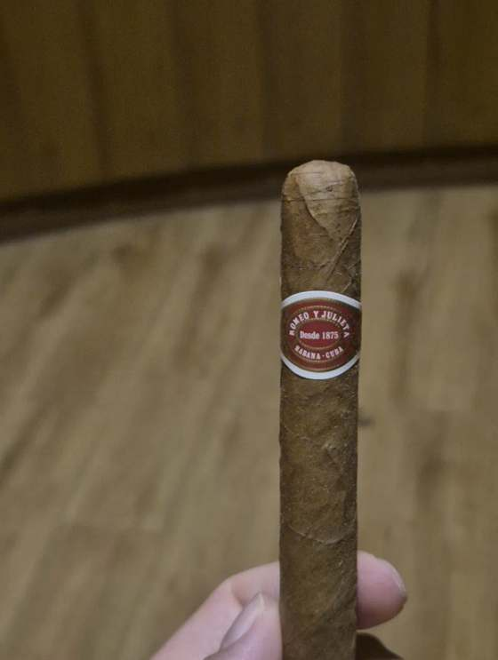
- 래퍼
- 쿠바 부엘타 아바호
- 바인더
- 쿠바
- 필러
- 쿠바 (퓨로)
- 시더 처음부터 끝까지, 두 번 다
- 단맛 1차 중반 (콜라 끊고)
- 고소·견과 1차 긴가민가 → 2차 확인
- 토스트·빵 2차
- 플로럴 = 시더의 산뜻한 면
- 후추 두 번 다 없음
- 흙 2차 막바지에 살짝
- 크림
- 가죽
발리 도착 다음날, 우붓 Ottimo에서 배달받은 다섯 개비 중 첫 번째이자 인생 첫 쿠반. 시글로 II·몬테 No.4보다 순한 것부터 가기로 하고 로메오 No.1을 골랐다. 로메오 이 훌리에타는 1875년 등록된 프리레볼루션 브랜드로 하바노스 글로벌 브랜드 중 하나, No.1은 1960년 이전 출시된 코로나(공장명 크레마스)로 2002년까지는 기계제였다가 이후 핸드메이드로 바뀌었다. 래퍼는 콜로라도 클라로 톤에 결이 곱고 기름기가 살짝 돌았다. 페어링은 제로콜라로 시작했다가 중반에 물로 바꿨다.
불 붙이자마자 시더. 그동안 세션마다 반복되던 초반 매콤함이 이번엔 없었다 — 쿠바 잎이 니카라과 잎보다 후추가 원래 적은 것도 있고, 얇은 코로나라 래퍼 향이 바로 살아나는 것도 있다. 후추가 없으니 레트로헤일 자극이 적어서 첫 1/3부터 편하게 코로 넘길 수 있었고, 그 덕에 시더를 온전히 잡았다.
리뷰에 붙는 "플로럴"은 결국 시더의 밝고 산뜻한 쪽을 가리키는 표현이라고 정리했다. 시더는 연필 깎을 때 나는 드라이한 나무 냄새와 갓 자른 나무의 상큼한 결, 두 얼굴이 있는데 후자를 사람에 따라 꽃이라 부른다. 별개의 꽃향(장미·재스민 같은)은 못 잡았고, 풀(grassy)도 없었다 — 둘 다 로메오 No.1의 확실한 노트는 아니라 없는 게 맞다.
제로콜라의 인공 단맛이 혀에 남아 시가의 은은한 단맛을 가리고 있었다. 물로 헹구고 두세 퍼프 지나자 입 안에 달달함이 남기 시작 — 로메오 중반의 밀크초콜릿·꿀이라 부르는 그 단맛이다. 코보다 혀에서 잡히는 노트라, 연기를 뿜고 나서 입 안에 남는 여운(피니시)을 쩝쩝여 보며 확인했다.
중반에 시더가 뒤로 빠지고 단맛·견과가 앞으로 나오는 건 로메오의 정상적인 전개. 고소함은 긴가민가한 수준 그대로 기록. 시더가 더 좋다는 건 중요한 취향 정보 — 시더가 끝까지 유지되는 시가(몬테 AJ, AVO)가 취향에 맞는다는 뜻이다.
같은 시더다. 몬테 AJ(No.12)에서 "시더+커피가 향긋"했던 그 결. 다만 몬테 AJ는 백후추가 옆에 붙어 시더가 스파이시하게 왔고, 로메오는 후추가 없어 시더가 혼자 깨끗하게 온다. 시더 자체가 안에 매콤한 결(연필 나무 냄새의 코 찡한 느낌)을 갖고 있어서, 몬테 AJ에서 "후추와 시더가 연결돼 느껴진다"고 했던 게 그거다. 로메오는 그 매콤한 부분을 빼고 나무 향만 남긴 "부드러운 시더".
여기서 취향 정의가 하나 바뀌었다. 야마사(No.11) 이후 "후추는 취향이 아니다"로 잡아뒀는데, 실제로는 야마사처럼 25분 내내 세게 오는 후추가 싫은 것이지, 몬테 AJ 정도의 약한 스파이스가 시더를 받쳐주는 건 오히려 좋아한다. 취향은 "약한 스파이스+시더" 조합 — 시글로 II가 딱 그 조합이라 로메오보다 더 맞을 가능성이 있다.
후반에도 시더+옅은 고소함이 그대로. 흙·후추·쓴맛 없음. 로메오 No.1은 후반에 크게 안 바뀌는 시가라 새 노트를 찾기보다 얼마나 깨끗하게 끝나는지를 봤는데, 밴드까지 쓴맛 없이 갔다. 그리고 쿠반이 논쿠반 마일드와 다른 지점 — 시그니처 No.2는 부드럽기만 한데 이건 부드러우면서 몸에 오는 게 있다. 쿠바 잎 니코틴이 주는 펀치감이고, "마일드한데 만족감 있다"는 말이 쿠반에 붙는 이유가 이거였다.
간격은 짧게, 한 번에 조금씩만 — 그래서 60분을 갔는데도 열이 안 올라 안 써졌다. 얇은 코로나에 특히 잘 맞는 방식이라 몬테 No.4·시글로 II에도 그대로 가져갈 것.
둘 다 얇은 마일드에 5만원대. 시그니처 No.2는 크림·바닐라·건초의 정제된 일직선, 로메오 No.1은 부드러운 시더에서 단맛·고소로 이어지는 흐름. 취향 축(시더·고소)으로는 로메오가 더 가깝다 — 시그니처 No.2에서 좋았던 건 정제됨이었지 크림·바닐라가 본진은 아니었다. 어렵게 느껴진 건 둘 다 마일드라 "확 다르다"가 아니어서. 하나만 고르면 로메오.
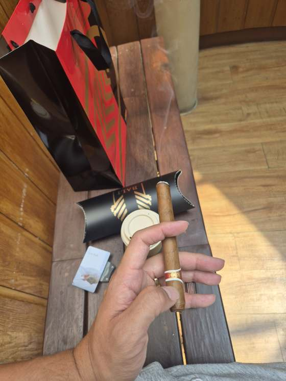
발리 닷새째 낮 13:55경. 전날 왓츠앱으로 주문한 LCDH 발리 물량(로메오 No.1 튜보 5개비 + 펀치 코로네이션 1개비, 라파엘 곤잘레스는 재고 없음)이 오전에 호텔로 도착해서 바로 한 대 깠다. 이번엔 Ottimo가 아니라 LCDH 정품 튜보 — 개비당 541,606 IDR로 Ottimo(700K)보다 23% 싸고 홍콩 COH 박스 단가(약 35,000원)보다 6천 원 정도 비싼 값. 페어링은 커피. 첫 개비 때 제로콜라가 단맛을 가렸던 걸 알고 있는 상태에서, 커피가 뭘 키우고 뭘 가리는지 보는 게 두 번째 목표였다.
첫 개비에서 "긴가민가"로 남겼던 고소함이 이번엔 첫 퍼프부터 시더 옆에 붙어서 왔다. 그리고 초반 매콤함이 두 번 연속 없음 — 이제 "로메오 No.1은 후추 없이 시더로 시작한다"를 이 시가의 특징으로 못 박아도 된다. 니카라과 계열에서 매번 오던 초반 매콤이 붙이는 방식이 아니라 잎 쪽 문제였다는 것도 같이 확인.
중반에 시더가 뒤로 빠지고 견과가 앞으로 — 첫 개비와 같은 전개인데 이번엔 견과의 볼륨이 컸다. 본인이 바로 짚었듯 커피의 로스팅 고소함이 입에 남아 시가 고소함을 키웠을 가능성이 있다. 첫 개비의 콜라가 단맛을 가린 것과 반대 방향으로 페어링이 노트를 움직인 것. 시가 것인지 커피 것인지 가르려면 물로 헹구고 두세 퍼프 뒤에도 남는지 봐야 하는데, 이 개비에선 커피를 계속 마셨다.
새 노트 하나 — 토스트·빵. 견과가 좀 더 익은 쪽으로 가면 나오는 결이고, 첫 개비 땐 없었다. 단맛은 못 잡았는데, 이건 없었다기보다 커피 쓴맛이 혀에 남아 있는 동안은 잡히기 어려운 쪽. 첫 개비도 콜라 끊고 물로 바꾼 뒤에야 왔으니, "커피 페어링에선 단맛 안 잡힘"으로 기록.
후반으로 가며 셋이 하나로 뭉쳤다 — 시더가 다시 앞으로 오면서 고소함·토스트와 겹쳐 "구운 삼나무 빵" 같은 한 덩어리. 로메오 No.1 후반의 "끝까지 일관" 구간인데, 첫 개비 땐 시더+옅은 고소함이었던 게 이번엔 볼륨이 붙었다. 커피 페어링이 고소 축을 키운 결과이기도 하고, LCDH 튜보 개비 컨디션이 좋았던 것도 있을 것.
막바지에 흙이 살짝 스쳤다. 첫 개비 땐 "흙은 잘 모르겠는데"였는데, 마지막 1/3에서 열이 오르고 타르가 모이면 밝은 시가도 조금 무거워지는 구간이라 정상 — 몬테 No.4처럼 처음부터 깔리는 흙이 아니라 끝에 스치는 정도라 로메오의 성격은 그대로다. 그리고 두 개비 연속 같은 반응. 시더·고소·니코틴 펀치, 후추 없음, 끝까지 깨끗 — 본인이 정리해 둔 취향 축을 전부 맞추는 시가라 좋을 수밖에 없다. 14:42 완주.
AVO Heritage Robusto
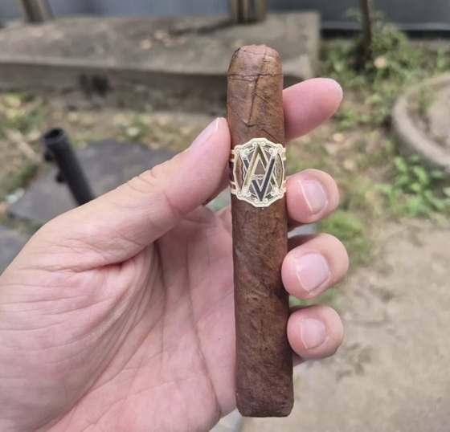
- 래퍼
- 에콰도르 선그로운
- 바인더
- 도미니카
- 필러
- 도미니카 5종
- 시더 두 개비 다, 레트로헤일
- 초콜릿 1차
- 후추 초반, 2차에서 뚜렷
- 단맛 1차 초반
- 고소 (기름진) 2차
- 크림 2차
- 카라멜 두 번 다 못 잡음
- 가죽
- 흙
2차 직구 물량 중 두 번째로 뜯은 개비. 어제 몬테크리스토 AJ(No.12)에 이어 도착 이틀째 세션이다. AVO는 피아니스트 Avo Uvezian의 브랜드였지만 1990년대에 Davidoff(Oettinger Davidoff)가 인수했고, 블렌더도 Davidoff 시가를 만든 Hendrik Kelner다 — 시그니처 No.2, 프리메로스, 야마사와 같은 집안. Heritage는 AVO 라인 중 강한 축으로 나온 블렌드로, 랩퍼는 2009년 Compañero에 쓰인 에콰도르 선그로운 잎을 그대로 쓴다.
"풀"이라고 붙어 있어도 이 시가의 강도는 니코틴 쪽이지 맛이 거친 게 아니다. 첫 몇 모금 스파이스 지나면 카라멜·크림으로 넘어간다는 후기와 맞았고, 다비도프 계열답게 결이 고른 것도 한몫했다. 초반부터 달달한 게 잡힌 건 카라멜 쪽으로 가는 신호.
시더가 레트로헤일에서 잡히는 게 이틀 연속으로 확인됐다 — 이제 본인 기준으로 잡힌 노트다. 몬테 AJ 쪽 시더가 더 셌던 건 래퍼 차이일 가능성이 크다: 몬테는 에콰도르 수마트라, 이건 에콰도르 선그로운이라 같은 에콰도르라도 결이 다르고, 선그로운은 단맛·카라멜 쪽으로 기운다. 후추가 시더에 붙어 온 건 퍼프 네다섯 번째, 후기에서 말한 "첫 몇 모금 혀랑 입술에 살짝 스파이스" 그 구간이었다. 야마사처럼 25분씩 버티는 후추는 아니었고, 이후로는 후추가 없었다.
번라인은 어제 몬테와 똑같은 패턴 — 도착 이틀째라 배송 중 흔들린 습도가 속까지 고르게 돌아오지 않은 상태다. 그런데 드로우가 빡빡하고 연기가 적은 건 안정화보다 습기 쪽 문제다. 배송 지퍼백에 보베다가 동봉돼 왔고 도착하자마자 다시 69% 통에 넣었으니 오히려 과습일 가능성이 크다. 이 시가는 후기에서 드로우가 너무 느슨하다는 말이 나올 정도라, 개비 문제보다 습도로 보는 게 맞다. 도미니카 시가가 원래 좀 낮은 습도를 좋아하는 것도 있고 — 남은 4개비는 65%로 낮춰 보관하거나 보베다 없이 며칠 두는 쪽을 검토할 것.
후기의 "레트로헤일에 초콜릿, 시더" 딱 그거다. 카라멜이나 크림은 드로우가 편해야 단맛이 입에 깔리는데, 드로우가 막히고 연기가 적으니 못 잡는 게 당연했다.
연기 질감은 드로우와 직결이라 오늘은 판단 보류. 다만 원래도 로키파텔 1990 같은 "리치한 질감" 계열은 아니다 — 도미니카 필러라 몸이 가볍고 대신 향으로 가는 쪽. 재운 다음 개비에서 연기가 잘 나와도 몬테 AJ(니카라과·온두라스 필러)보다는 얇을 가능성이 크고, 그때 "얇은데 향은 좋다"인지 "얇고 향도 별로"인지 갈릴 것이다.
오늘 세션의 중심 노트는 시더였다. 뒤로 갈수록 강해지는 건 타 들어가며 온도가 올라가는 구간의 흔한 패턴 — 후반에 시더·우디가 앞으로 나오고 단맛은 뒤로 빠진다. 어제 몬테의 시더는 "향긋", 오늘은 "지속적" — 이렇게 둘이 구분되면 좌표가 된다.
후반의 화한 건 후추가 아니라 뜨거운 연기다. 드로우가 빡빡한 상태에서 세게 빨면 더 심해진다. 야마사 때 "후추가 세다"였고 오늘은 "화하다" — 후추는 혀·코에 톡 쏘는 것, 화한 건 입 안에 열기가 남는 것. 이 둘을 구분해서 느낀 게 의미 있다. 마지막 1인치는 어차피 뜨겁고 씁쓸해지는 구간이라 여기서 종료.
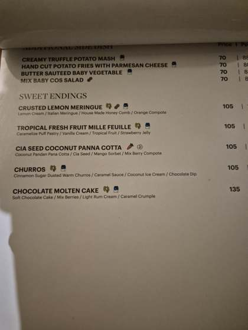
발리 넷째 날 밤 19:31경, 우붓 웨스틴. 저녁 먹고 물로 가글한 뒤 페어링 없이 시작. 첫 개비가 도착 이틀째 컨디션 문제로 판단 보류였으니, 닷새 더 재운 두 번째 개비로 다시 본 세션이다. 잡을 목표는 지난번 못 잡은 카라멜·크림, 그리고 연기 질감이 원래 얇은 건지.
초반은 시더 + 후추. 지난번엔 후추가 퍼프 네다섯 번에 잠깐이었는데 오늘은 뚜렷했다 — 이 시가의 초반이 원래 이런 거고, 지난번은 습도에 눌린 거였다. 몬테 AJ와 겹치는 출발이라 "느낌이 몬테 AJ랑 비슷하냐"는 말이 나왔는데, 둘 다 에콰도르 래퍼에 후추+시더 시작이라 초반은 비슷하고 중반부터 갈리는 구조 — 몬테는 커피·플로럴 쪽, 이건 단 쪽.
중반 초입은 시더가 중심이고 그 뒤에 고소함이 얇게 붙는 구간. 마른 아몬드냐 기름진 땅콩버터냐 고르라니 기름진 쪽 — 힌트 없이 꼽으라면 못 하겠는데 둘 중 고르라면 된다는 게 지금 단계다. 지난번엔 이 구간이 통째로 없었다.
지난번 못 잡은 둘 중 크림은 잡혔다. 기름진 고소함이 깔린 뒤에 온 흐름이라 후기의 "카라멜·크림"이 빈말은 아니었던 것. 카라멜은 이번에도 못 잡음.
문제는 또 드로우였다. 시작은 정상이었는데 피울수록 막혀 갔다. 두 개비 연속이면 개비 문제가 아니라 이 5팩 자체가 단단하게 말렸거나, 69% 보관이 도미니카 시가엔 높은 쪽일 가능성. 맛과 향은 괜찮았는데 드로우가 매번 아쉬우면 피우는 재미가 깎인다.
바디감 얘기도 정리됐다. 바디(입 안 무게감·연기 질감), 스트렝스(니코틴 세기), 플레이버(향의 강도)는 다른 것 — 아보 헤리티지는 스트렝스 높고 바디 미디엄이라 "풀"인데 부드럽게 느껴진다. 본인은 스트렝스 있는 쪽을 좋아한다고 확인.
Montecristo Crafted by AJ Fernandez Toro
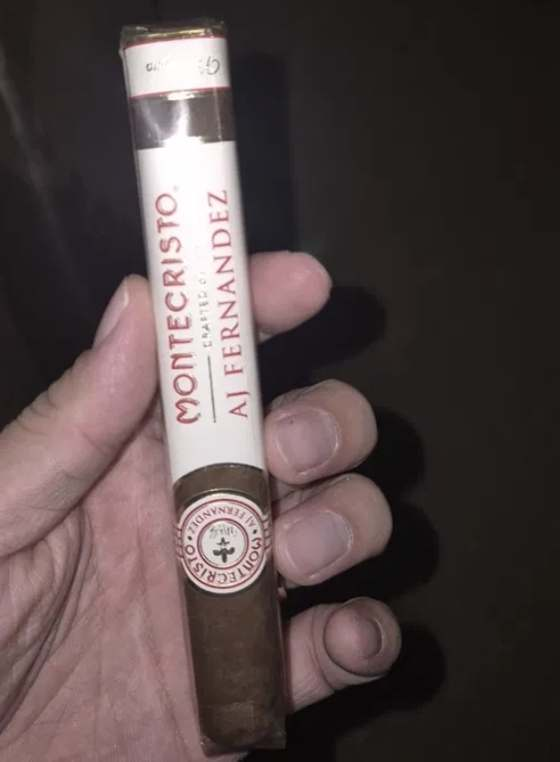
- 래퍼
- 에콰도르 수마트라
- 바인더
- 멕시코 산안드레스
- 필러
- 니카라과 · 온두라스
- 백후추 초반
- 단맛 입
- 시더 후추와 붙어서
- 플로럴 레트로헤일
- 커피 (라이트 로스팅) 플로럴과 한 덩어리?
- 코코아
- 가죽
- 감초
- 미네랄
- 흙
2차 직구 물량이 도착한 날 바로 뜯은 10팩 중 첫 개비. 쿠바 몬테크리스토 이름을 달고 AJ 페르난데즈가 니카라과 에스텔리 공장에서 만든 협업 라인이다. 도착 당일이라 재우지 않은 상태였고, 그게 번라인에서 드러났다.
백후추는 정확했다. 같은 토로 리뷰에서도 커피·백후추·시더로 시작한다고 적혀 있다. 코에서는 스파이스, 입에서는 단맛 — 입과 코가 다른 걸 말하는 구조는 다이아몬드 크라운(No.5)에서도 봤던 그림이다.
공식 노트(코코아·감초·가죽·커피·스파이스)에는 꽃이 없다. 하지만 직접 피운 리뷰어들 중에 꽃향과 과일향, 초반의 과일 같은 단맛을 적은 사람들이 있었다. 공식 노트는 브랜드가 내세우는 것이고, 실제 연기에서 뭐가 잡히느냐는 또 다른 이야기다.
이게 이날 가장 좋은 해석이었다. 라이트 로스팅 커피는 쓴맛보다 꽃·과일 같은 산뜻함이 앞에 서서, 향으로 맡으면 달큰하고 화사하게 읽힌다. 커피는 공식 노트에도 있다. 달달한 향, 플로럴, 커피가 사실은 한 덩어리였을 수 있다.
시더는 연필 깎을 때 나는 삼나무 향 — 건조하고 살짝 매콤한 나무향이라 후추랑 한 덩어리로 읽히기 쉽다. 초반의 "스파이스"가 사실은 후추와 시더가 함께 온 것이었다는 자각. 시더를 처음 옅게 잡았던 건 푸엔테 로얄 살루트(No.10)였고, 이번엔 주연이었다.
50링 토로는 한 번에 확 달아오르지 않아 열관리가 쉽고, 그래서 향이 탁해지지 않는다. No.10에서 5인치대가 맞는다고 했지만, 이 사이즈는 부담이 아니라 편함으로 다가왔다.
마두로가 아니다. 래퍼가 에콰도르 수마트라라 원래 어둡게 나올 뿐, 오래 발효시킨 마두로 잎이 아니다. 그래서 마두로의 달달고소가 적은 게 맞고, 수마트라는 단맛보다 스파이스·나무향 쪽이 도드라진다 — 시더가 계속 가는 것과 결이 맞았다. 색으로 랩퍼를 판단하면 안 된다는 교훈(No.6, No.11)이 또 한 번.
후추가 가라앉은 뒤에도 맛 변화는 크지 않았다. 리뷰에서도 첫 1인치까지는 변화가 없다가, 중반쯤 꽃향·팔각·미네랄이 올라오고 절반 지점이 가장 좋은 구간이라고 했다. 그 구간을 앞두고 내려놓았다.
미네랄 이야기도 나왔다. 얼씨(흙)는 젖은 흙·버섯처럼 묵직하고 둥글고, 미네랄은 젖은 돌·분필처럼 건조하고 깔끔하다. 묵직하면 흙, 드라이하면 미네랄.
배송으로 습도가 고르지 않은 상태. 덜 탄 쪽만 살짝 터치업하되 너무 자주 손대지 않는 게 요령이다. 남은 9개비는 터퍼더에서 1~2주 재워 번라인과 향이 얼마나 달라지는지 볼 것.
배가 아파 22:28경 절반에서 내려놓았다. 시가 탓이 아니라 몸 컨디션 탓이라 평가를 깎을 이유는 없다. 다시 붙이면 쓴맛이 올라와서 남은 반은 보내주기로.
다비도프 야마사 페팃 처칠
- 래퍼
- 도미니카 야마사 (셰이드그로운)
- 바인더
- 도미니카 야마사 (산 비센테)
- 필러
- 도미니카 (필로토·메호라도) · 니카라과 (콘데가·에스텔리)
- 후추 25분, 그리고 후반 귀환
- 흙 "부드러운데 묵직"
- 단맛 흑설탕
- 건초 흙과 같은 축으로 인식
- 가죽 꺼질락 말락 할 때
- 커피
- 견과
- 코코아
- 시더
외출용 가죽 케이스(아도리니 3-5)를 사러 간 파스타바코에서, 직구 물량이 막 도착한 터라 딱 한 개비만 아쉬운 마음에 집어온 시가. 랩퍼가 진해서 마두로 쪽인 줄 알았는데, 야마사는 마두로가 아니다 — 도미니카 야마사 지역의 늪지 흙에서 20년 걸려 키워낸 잎이라 색이 진할 뿐, 발효로 단맛을 끌어낸 마두로와는 문법이 다르다. 미국가 17불짜리를 63,000원에 산 셈이라 가격은 "맛보기 수업료"로 정리.
첫 퍼프부터 온 매운맛이라 토치 탓은 아니다. 혀끝과 코 안쪽이 따끔하고 뒤에 쓴맛이 안 남으면 후추, 목이 칼칼하고 텁텁한 쓴맛이 남으면 열 — 이날은 전자였다. 니카라과 에스텔리 필러의 오프닝인데, 프리메로스나 코네티컷 리저브의 초반 매콤보다 세고 훨씬 오래 갔다. 짧은 시가라 금방 빠질 줄 알았는데 25분 가까이 후추가 앞을 막았다.
후추 뒤에 뭐가 있는지 찾는 도전을 시작했다. "비 온 날 창문 열었을 때 냄새"는 안 통했고, 버섯 볶는 냄새·흙 묻은 감자 껍질·우엉 삶은 물로 바꾸니 잡히기 시작했다.
마지막 표현이 흙을 처음 잡은 사람들이 거의 똑같이 하는 말이다. 고소함과 흙은 둘 다 볶은 것·구운 것 계열이라 같은 결로 붙어 다니고, 흙은 거기서 단맛과 향긋함을 뺀 자리. No.10에서 "입에 남는 텁텁한 무게감"으로 정의했던 흙이, 이날 "부드러운데 묵직한, 고소한 결의 무언가"로 한 번 더 좌표를 얻었다.
더 큰 발견은 그 뒤에 왔다.
건초와 흙은 같은 축 위에 있다 — 마른 풀에서 젖은 흙까지 하나의 연속선이고, 그 중간 어디쯤에 담뱃잎 자체의 기본 결이 있다. 코네티컷에서는 가볍게 건초로, 야마사에서는 무겁게 흙으로 읽혔을 뿐. 시그니처 No.2, 플라센시아, 야마사에 공통으로 흐르던 그 결의 정체다. 앞으로는 "건초 쪽" "흙 쪽"으로 방향만 붙이면 된다.
꽤 정확한 연결이다. 불이 약해지면 연기가 낮은 온도로 나오면서 향은 빠지고 담뱃잎의 밋밋하고 마른 결만 남는데, 그게 가죽이라 부르는 노트와 닮았다. 불 살려서 정상 온도에서도 남아 있으면 블렌드의 가죽이고, 온도가 올라오며 사라지면 그냥 꺼지는 신호. 그 밋밋한 결을 "가죽"이라 좋게 부르냐 "꺼진 맛"이라 나쁘게 부르냐는 종이 한 장 차이다.
후추 구간이 끝나고 야마사 본체가 나온 구간. 그리고 한 번 자리 잡으면 끝까지 흔들리지 않는 다비도프 하우스 스타일이 여기서도 그대로였다 — No.4, No.9에서 내린 결론과 같다. 리뷰에 적힌 커피·견과는 못 잡았지만, 레트로헤일을 조금만 하는 요령(입에 머금은 연기 대부분은 입으로 뱉고 마지막 한 줌만 코로)으로 단맛을 찾았다.
니카라과 필러의 흑설탕 느낌 단맛. 초코처럼 진하지 않고 끝에 살짝 걸리는 정도가 정상이다. 후추 → 흙 → 단맛까지, 처음 피우는 시가에서 꽤 많이 읽어낸 세션.
야마사는 후추가 앞뒤를 감싸고 중간에 흙·단맛이 있는 구조다. 재우면 초반 후추는 줄어도 후반 후추는 블렌드 구조라 남는다. 중반 20분이 좋았던 건 사실이지만, 그 20분을 위해 앞뒤 후추를 견디는 건 취향에 안 맞는 거래였다.
아투로 푸엔테 샤토 푸엔테 로얄 살루트 마두로
- 래퍼
- 코네티컷 브로드리프 마두로
- 바인더
- 도미니카
- 필러
- 도미니카
- 초콜릿 첫 퍼프부터
- 고소
- 시더 옅게
- 건초 건초인지 흙인지
- 흙 건초인지 흙인지
- 커피
- 후추
- 가죽
직구 물량 중 가장 큰 놈. 이름이 위스키랑 같아서 헷갈릴 뻔했지만, 로얄 살루트는 샤토 푸엔테 라인의 사이즈 이름이다 — 7⅝인치에 54링, 지금까지 태운 것 중 압도적으로 크다. 궁금해서 꺼냈지, 아니었으면 망설였을 크기.
링게이지 효과다. 54링은 불 붙은 끝에서 입까지 거리가 길고 필러 덩어리도 커서, 열이 식으며 올라온다. 파나텔라·주니어에서 반복됐던 초반 매콤은 얇은 포맷이 열을 그대로 혀에 꽂아서 과장된 것이었고, 여기선 랩퍼 본색이 첫 퍼프부터 나왔다. 레트로헤일도 처음부터 편했다.
큰 사이즈라 시더·흙이 먼저 올 거라 예상했는데 빗나갔다 — 브로드리프 마두로 랩퍼가 처음부터 일했다. 파드론 2000 이후 취향 축(고소·초콜릿·견과)에 두 번째로 정확히 앉은 오프닝. 시더도 옅게 잡혔는데, 건초와 헷갈릴 만했다 — 둘 다 드라이한 식물성 향이고, 시더는 연필 깎을 때 나무 냄새로 살짝 매콤·향긋한 쪽, 건초는 마른 풀로 밋밋·달큰한 쪽이다.
흙(earthy)은 이날 처음 제대로 정의한 노트. 향이 아니라 입에 남는 질감 — 혀 뒤쪽과 입천장에 남는 텁텁한 미네랄 무게감이다. 그리고 초콜릿과 뿌리가 같다: 마두로 발효로 잎 속 당분이 캐러멜화되며 초콜릿 단맛과 흙 느낌이 함께 만들어진다. 다크초콜릿 뒤에 남는 묵직함이 그것. 리뷰에서 "초콜릿과 흙"이 세트로 붙는 이유다.
착각이 아니다. 강한 첫인상 노트에 코가 적응하며 초콜릿이 배경으로 내려간 것과, 랩퍼 끝부분이 먼저 타던 초반이 지나 필러가 본격 합류하며 도미니카 특유의 옅은 고소함이 올라온 것이 겹쳤다. 건초냐 흙이냐는 끝까지 확정 못 했고, 헷갈리는 상태 그대로 기록하기로 했다 — 그 자체가 좌표다.
두꺼운 시가의 숙명. 필러가 많아 계속 산소가 들어가야 불이 유지되고, 내려놓으면 안쪽부터 식는다. 살릴 땐 세게 몰아치기보다 토치로 끝을 살짝 돌려 데운 뒤 가볍게 두세 번 — 급하게 빨면 열이 확 올라 매워진다. 재를 좀 길게 남겨두면 단열이 돼 불 유지에 오히려 도움이 된다.
정확한 관찰이다. 푸엔테 마두로는 "마두로 중 제일 순한 마두로"로 통한다. 도미니카 필러가 가벼움을 주고, 브로드리프는 색과 초콜릿만 얹은 구조. 순한 시가 공통 노트인 건초 비슷한 결이 여기서도 잡히는 게 이상하지 않다. 이날의 결론 하나 — 마두로라고 다 묵직한 게 아니고, 무게는 랩퍼가 아니라 필러가 정한다. 사이즈 가설(두꺼우면 랩퍼 비중이 희석돼 둥글어진다)도 반은 맞지만, 부드러움의 더 큰 몫은 도미니카 블렌드다. 검증하려면 니카라과 블렌드를 큰 사이즈로 태워보면 된다.
변화는 완만했다. 올리바처럼 플로럴→초콜릿→가죽으로 꺾이는 구조가 아니라, 같은 곡을 볼륨만 조금씩 바꾸는 타입. 두꺼워서 여러 잎이 한꺼번에 섞여 타니 평균화되는 것도 있고, 샤토 푸엔테 자체가 균형·일관성 컨셉이라 다비도프 시그니처처럼 일직선 성향이 있다. 후반의 커피·페퍼 구간은 못 보고 절반에서 내려놓았다 — 재떨이에 그냥 두고 꺼지게.
집중해서 분석하는 시가가 아니라 자리를 채우는 시가. 변화가 적고 순해서 두 시간 대화하며 옆에 두기 좋은 구조고, 혼자 앉아 노트 잡으려니 지루하게 느껴진 것. 순한 마두로라 위스키를 덮지 않으니 블루라벨 같은 둥근 술과 라운지에서 길게 가면 맞을 것이다. 푸엔테 브랜드 자체는 합격.
다비도프 프리메로스 마두로 니카라과
- 래퍼
- 멕시코 수마트라 마두로
- 바인더
- 에콰도르
- 필러
- 니카라과 (에스텔리·오메테페·할라파) · 도미니카 필로토
- 후추 초반
- 고소
- 단맛 "고소달콤"
- 코코아
- 흙
- 커피
- 시더
모든 것의 시작점과의 재회. 기록을 시작하기 전 처음 태워 취미의 문을 열었던 그 시가를, 직구 틴이 터퍼더에 들어온 지 이틀 만에 아침 야외에서 다시 만났다. 이번엔 제대로 기록하면서.
토스팅을 안 태우고 잘 붙인 실력도 맞고, 34링의 작은 착화 면적과 다비도프의 드로우 품질 관리가 거든 것도 맞다. 얇은 시가에서 첫 퍼프가 맵지 않게 나왔다는 건 라이팅이 깨끗했다는 신호.
초반에 블랙페퍼와 고소함이 동시에 왔다. No.8에서 정리한 니카라과 오프닝 패턴 그대로인데, 이번엔 매콤이 거칠지 않고 고소함과 나란히 왔다. 비교 좌표도 바로 나왔다.
숙성 브로드리프의 흙·가죽 쪽 묵직함(RP)과 니카라과 마두로의 단맛 붙은 고소함이 갈리는 지점이다.
마두로 발효 랩퍼의 본체가 나온 구간. 파드론 2000에서 잡았던 견과→코코아 라인의 연장선인데, 질감이 실제 바디(미디엄)보다 한 겹 묵직하게 느껴지는 게 마두로의 효과다.
얇은 포맷이 사실 만들기 제일 어렵다. 필러 잎이 몇 장 안 들어가 잎 하나의 편차가 그대로 드러나고, 랩퍼가 맛에서 차지하는 비중도 커진다. 프리메로스는 숏필러 섞인 쁘띠인데도 구간 간 흔들림이 없었다 — 잎 선별과 드로우 검사를 이중으로 돌리는 세공 정밀도의 값.
시그니처 No.2에서 내린 결론과 같다. 포맷 한계(20분 러닝타임에 3막을 넣기 어렵다)도 있지만, 극적인 전환보다 흐트러짐 없는 밸런스를 지향하는 다비도프 하우스 스타일이 근본이다. 후추→고소달콤 전환 하나면 이 사이즈에선 준수한 편.
개비당 5불대. 국내 틴 14만원(개비당 2만 3천원대)과 비교하면 4배 차이로, 이 품질이 이 가격이면 데일리 슬롯에 부담 없이 들어온다.
올리바 코네티컷 리저브 로부스토
- 래퍼
- 에콰도르 코네티컷 셰이드
- 바인더
- 니카라과
- 필러
- 니카라과
- 건초
- 크림 약간
- 후추 초반
- 쓴맛 후반
- 견과
- 시더
- 토스트
직구 도착 이튿날, 아침 스페셜 G(No.7)에 이어 같은 날 두 번째 세션. 5팩 중 첫 개비다. 랩퍼는 옅은 금갈색이 예쁘게 나온 에콰도르 코네티컷 — 이름은 코네티컷이지만 에콰도르의 구름 낀 자연광 아래서 기른 잎이고, 속은 세리에 G와 같은 니카라과 잎이다.
마일드한 건 맞는데 향이 전반적으로 약했다. 어제 막 도착한 물량이라 배송 스트레스 변수가 있는 상태. 그리고 초반 매콤함이 또 왔다.
이번엔 토칭을 짧게 하고 불꽃도 안 닿게 했는데도 그랬다. 즉 기술 문제가 아니라 — 니카라과 필러 시가의 정상 오프닝이다. 블렌더들이 일부러 첫 1/3을 페퍼로 시작하게 말고, 세션 초입엔 미각이 제일 예민해서 같은 스파이스도 크게 온다. 파드론, 세리에 G, 그리고 이것까지 전부 니카라과 속심이라 초반 매콤이 공통이었던 것.
시그니처 No.2 후반에 스스로 잡아냈던 건초가 여기서도 나왔다. 시가 단위가 아니라 랩퍼 단위로 향을 인식하기 시작한 세션. 같은 건초 축 위에서 다비도프는 크림·바닐라로, 올리바는 니카라과 속심 탓에 스파이스 쪽으로 기운다. 너트는 이번에도 잘 안 잡혔다 — 원래 애매하게 오는 노트라 못 잡아도 이상한 게 아니다.
매콤함이 가라앉고 부드러운 건초향과 약간의 크림이 왔다.
꽤 정확한 요약이다. 같은 코네티컷 셰이드 랩퍼 문법이라 건초·크림 축이 겹치고, 차이는 정제도 — 다비도프는 그 축을 매끈하게 일직선으로 뽑고, 올리바는 같은 재료를 니카라과 스파이스 섞인 채 투박하게 낸다. 가격 차이가 곧 마감 차이.
후반부에 들어서자 쓴맛이 올라왔다. 마일드 시가의 전형적인 마무리 — 타르 농축과 열 누적이 겹치는데, 가려줄 진한 노트가 없어 유독 빨리 드러난다. 마일드는 밴드까지 억지로 가지 않고 쓴맛이 올라올 때 내려놓는 게 맞다. 여기서 종료.
재 튼튼하고 번 고른 건 올리바 컨스트럭션 값을 했고, 향의 복합성은 15불대 대비 부족 — 개비당 $4.6이라는 가격 그대로의 포지션이다. 세션을 기대하고 꺼내는 시가가 아니라, 데일리로 부담 없이 태우는 용도.
올리바 세리에 G 스페셜 G
- 래퍼
- 아프리카 카메룬
- 바인더
- 니카라과 하바노
- 필러
- 니카라과 하바노
- 단맛 시작부터
- 플로럴 "플로럴인지 화사한 느낌"
- 후추 초반
- 초콜릿·카라멜 약하게
- 시더
- 견과
- 가죽
직구 물량이 도착한 이튿날, 터퍼더에서 꺼낸 첫 개비. 세리에 G는 토로(No.3)로 이미 만난 블렌드라, 같은 담뱃잎이 사이즈에 따라 어떻게 달라지는지 보는 세션이 됐다. 페르펙토는 양끝이 좁아지는 모양이라 뾰족한 팁만 먼저 붙이고 번짐이 자연스럽게 퍼지도록 두는 게 정석 — 억지로 토치를 다시 대면 초반 스파이스가 과장된다.
팁 좁은 구간은 랩퍼 비중이 가장 높은데, 카메룬 랩퍼의 달큰한 스파이스가 시작부터 왔다. 그리고 토로 초반의 플로럴과 이어지는 화사한 느낌이 스파이스를 뚫고 레트로헤일로 같이 들어왔다.
이 지점에서 위스키와의 연결을 스스로 정리했다 — 향은 능동적으로 찾아야 하고, 코가 열려 있어야 느낄 수 있다. 위스키 노징과 레트로헤일은 결국 같은 기관(후각 상피)을 쓰는 같은 기술이다. 그린라벨에서 목 깊은 곳으로 피트를 잡았던 것도 같은 경로.
스파이스 구간이 지나가자 초콜릿·캐러멜 계열이 왔다. 다만 약하게 — 처음엔 저렴이라 향이 약한가 싶었지만, 스페셜 G는 토로와 같은 블렌드를 작게 만 것이라 품질 차이는 없다. 세리에 G 자체가 노트가 은은한 편이고, 링게이지가 작아 랩퍼 비중이 높은 만큼 필러 쪽 노트가 옅게 느껴질 수 있으며, 아이스 아메리카노 페어링이 섬세한 단맛 대역을 덮었을 가능성도 크다 — 다비도프 세션에서 배운 그대로. 차가운 커피는 입안 온도까지 낮춰 단맛 감지를 더 무디게 한다. 다음엔 같은 걸 탄산수와 태워보면 좋은 비교 실험이 될 것.
밴드 1cm 앞에서 드로우가 뻑뻑해졌다. 페르펙토 후반부에 타르와 수분이 좁아지는 아래쪽으로 밀리며 생기는 흔한 현상으로, 퍼지(반대로 불어내기)와 재 털기가 대응법. 세션이 20분 안쪽으로 표준(30~45분)보다 빨랐던 만큼 열 누적의 영향도 있었을 것이다. 밴드 근처까지 왔으면 충분히 다 피운 것 — 마지막 1인치는 원래 타르가 모여 맛이 가장 거친 구간이라, 여기서 깔끔하게 내려놓았다.
약간의 달달함과 캐러멜 — 급할 때 꺼내는 용도로는 프리메로스보다 조금 더 나은 선택지라는 판정.
플라센시아 알마 델 시엘로
- 래퍼
- 니카라과 할라파 하바노 (선그로운)
- 바인더
- 니카라과
- 필러
- 니카라과 (퓨로)
- 건초 두 번째 확인
- 고소 마지막
- 후추 마지막 1/3
- 흙
- 시더
- 단맛
- 크림
지난번 다이아몬드 크라운과 함께 사온 두 대 중 남은 한 대. 이번엔 예고대로 자리를 만들어 야외 테이블에서 개시했다. 태우기 전부터 랩퍼 뒤쪽에 잔금형 크랙과 작은 조각이 떨어진 자리가 보였고 — 건조 의심 신호 — 아니나 다를까 번 라인이 다가오자 크랙이 더 벌어졌다. 퍼프 간격을 벌려 온도를 낮추며 그 구간을 그대로 태워 넘겼다.
퍼프가 라이트하게 되고 연기 질감이 가벼웠다. 그리고 건초향 — 시그니처 No.2에서 스스로 찾아냈던 그 노트를 이번엔 얼핏 바로 알아봤다. 두 번 연속으로 잡았으니 이제 확실히 아는 노트가 됐다.
다비도프랑 되게 비슷한데, 요게 좀 더 묵직하다. 태우면서는 같은 코네티컷 결로 여겼는데, 알고 보니 니카라과 퓨로 — 랩퍼도 코네티컷이 아니라 할라파 고산지대에서 기른 하바노 품종이다. 하바노 랩퍼를 블라인드로 코네티컷급 부드러움으로 읽은 셈인데, 고산지대 재배가 단맛과 밸런스를 만든다는 이 라인의 컨셉과 맞아떨어지는 감상이었다. 마일드해도 흙내와 무게가 한 겹 더 깔리는 건 퓨로의 몫. 향의 전환은 적고, 올리바처럼 노트가 바뀌는 타입이 아니라 한 결로 쭉 가는 타입.
마지막 1/3에서 매콤함이 올라왔다. 크랙으로 공기가 새서일 수도, 후반 열 누적의 자연스러운 전개일 수도 — 둘 다였을 것이다. 그리고 끝으로 가니 매콤함 옆에 고소함이 남았다. 니카라과 필러가 마지막에 서명하고 간 것.
단점 하나 — No.2보다 들고 있기 불편했다. 파나텔라의 가는 링게이지가 손에 쏙 들어왔다면 로부스토는 통통해서 그립감이 다르다. 맛 취향과 별개로 비톨라 취향이 슬림 쪽일 수 있다는 첫 기록. 다만 마일드해서 피우기 자체는 편했다.
다이아몬드 크라운 마두로 No.5
- 래퍼
- 코네티컷 브로드리프 마두로 (2차 발효)
- 바인더
- 도미니카
- 필러
- 도미니카
- 견과 초반부터 끝까지
- 로스티
- 우유 크림 코에서, 질감과 향 분리
- 후추 절반 이후 레트로헤일
- 단맛 입, 끝까지
- 초콜릿
- 흙
- 가죽
- 바닐라
근처 약속 전에 레솔베르에 들러 집어온 두 대(플라센시아 알마 델 시엘로와 함께, 각 66,000원) 중 첫 개비. 일정 때문에 창문과 선루프를 전부 열고 차에서 태웠는데, 이건 두고두고 후회로 남았다 — 이 급의 시가는 자리부터 만들어놓고 개시할 것.
마두로 랩퍼라 묵직할 줄 알았는데 질감이 라이트했고, 초반부터 너트 계열의 고소함과 로스티한 결이 올라왔다. 연기가 아주 부드러웠다.
코에서 부드러운 향이 따로 잡혔고, 크림인지 바닐라인지 갈리던 것을 우유 크림으로 정리했다. 크림을 질감과 향, 두 층으로 분리해서 잡아낸 첫 세션. 입에서는 너트가 그대로 유지됐다.
레트로헤일에 코가 찌릿한 블랙페퍼가 본격화됐지만, 입안은 끝까지 달달하고 부드러웠다. 입과 코의 경로가 갈려 동시에 오는 균형이 이 구간의 매력.
다비도프 시그니처 No.2
- 래퍼
- 에콰도르 코네티컷
- 바인더
- 도미니카
- 필러
- 도미니카
- 건초 후반, 스스로 찾음
- 크림 "바닐라인지 모를 크림"
- 바닐라 크림과 섞여서
- 후추 초반·후반 매콤
- 토스트·태우는 향
- 시더
- 견과
- 꿀
처음으로 시가 라운지에서 태운 세션. 다비도프 재떨이가 놓인 대리석 테이블 위에서, 계속 눈여겨보던 시그니처 No.2를 드디어 개시했다. 라운지 가격 88,000원 — 스틱 자체 가격의 세 배 가까이 되지만, 자리값이라 생각하기로 했다. 첫 파나텔라 사이즈이기도 하다.
불을 붙이자마자 매콤함이 먼저 올라왔다. 로키파텔 때 배운 대로, 라이팅 직후의 스파이스는 토치 열 때문에 과장되는 경우가 많다. 퍼프 간격을 여유 있게 가져가며 온도를 안정시켰다.
스파이스가 가라앉으니 확실히 부드러워졌고, 그 사이로 정체가 애매한 노트가 올라왔다.
알고 보니 이 표현 자체가 정확한 기록이었다 — 시그니처 No.2는 크림과 바닐라의 경계가 섞여서 올라오는 게 특징이다. 다만 커피와 함께 마셔서인지 크림 노트는 많이 못 느꼈다. 커피의 로스티드한 쓴맛이 섬세한 크림 대역을 덮는다는 것, 마일드한 시가일수록 물이나 탄산수 페어링이 낫다는 것을 배웠다. 대신 스파이스가 가라앉은 뒤의 태우는 냄새가 좋았다 — 커피 페어링이 토스티한 쪽을 증폭시킨 효과일 수도.
중반부에 들어서며 솔직한 평가가 나왔다: 향이 복합적인지는 잘 모르겠다. 올리바처럼 노트가 전환되는 시가가 아니라, 정제된 맛이 일직선으로 가는 시가였다. 그런데 그게 이 브랜드의 정체성이었다.
마지막 1/3에서는 열이 누적되며 다시 매콤해졌다. 초반 매콤 → 중반 크림/바닐라 → 후반 스파이스로 마무리되는 아치형 궤적. 그리고 마지막 구간에서 스파이스 사이로 낯선 향을 스스로 잡아냈다 — 건초향(hay). 사전 정보 없이 찾아낸 노트인데, 알고 보니 코네티컷 랩퍼 마일드 시가의 대표 노트이자 시그니처 No.2 리뷰의 단골 표현이었다.
올리바 세리에 G 토로
- 래퍼
- 아프리카 카메룬
- 바인더
- 니카라과 하바노
- 필러
- 니카라과 하바노
- 플로럴 초반
- 밀크초콜릿 중반
- 후추 후반
- 가죽 후반
- 시더
- 커피
- 견과
- 카라멜
처음 태워본 토로 사이즈. 한 시간에 걸친 세션 동안 향의 전개가 뚜렷하게 세 번 바뀌었다.
시작부터 레트로헤일로 플로럴 노트가 잡혔다. 스파이스가 약할 때 이런 섬세한 노트가 드러난다는 것을 스스로 관찰했고, 이는 정확한 원리였다.
중반으로 넘어가며 플로럴이 밀크초콜릿으로 전환됐다. 부드럽고 달큰한 구간.
후반부에는 페퍼와 가죽이 올라오며 무게가 실렸고, 묵직하고 스파이시하게 마무리됐다.
로키파텔 빈티지 1990 주니어
- 래퍼
- 온두라스 (12년 숙성)
- 바인더
- 온두라스
- 필러
- 도미니카 · 니카라과
- 가죽 콜드 드로우
- 크림 후반
- 단맛 혀끝
- 시더 레트로헤일
- 후추 토치 탓인지 시가인지
- 흙
- 코코아
- 커피
틴에서 꺼낸 첫 개비. 콜드 드로우에서 가죽 노트가 잡혔다.
라이팅에서 토치를 잘못 대어 초반에 스파이스가 강하게 올라왔다. 하지만 이 스파이스는 시가의 성격이 아니라 기술의 문제였다.
후반으로 갈수록 부드러워지며 크리미함과 혀끝의 단맛이 드러났고, 레트로헤일로는 시더가 잡혔다. 이 개비는 드로우가 약간 타이트했지만 전반적으로 만족스러운 세션.
파드론 2000 내추럴
- 래퍼
- 니카라과 하바노
- 바인더
- 니카라과
- 필러
- 니카라과 (퓨로)
- 고소·견과
- 코코아
- 커피
- 흙
- 후추
- 시더
- 가죽
저널의 공식 첫 세션. 고소함에서 코코아로 이어지는 니카라과 담뱃잎의 전개가 인상적이었고, 가격 대비 만족도가 컸다.